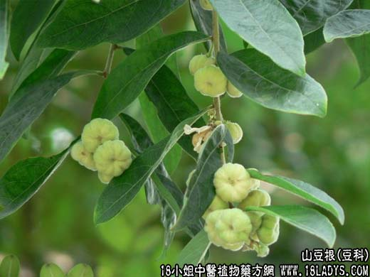

【中药概述】
山豆根为豆科灌木植物柔枝槐的根及根茎。苦、寒。归心、肺、胃经。
1．清热利咽：用于热毒上侵，咽喉红肿（如咽炎、扁桃体炎）、疼痛或牙齿肿痛等，常配元参，麦冬，银花，桔梗，甘草，薄荷等；对肺热咳，可配黄芩，瓜蒌，贝母，知母，桔梗，元参等。
2．用于皮肤溃疡，秃疮，疥癣，蛇、虫、犬咬伤。可研粉外用。
【药效鉴别】
山豆根苦降泄热，泻火解毒力较强，为治咽喉肿痛之要药，主用于咽喉红肿热痛属于实火肺热者。有“解咽喉肿痛第一要药”之称。
【药理作用】
1.对白血病细胞有抑制作用、可延长患腹水癌动物的存活时间；
2.有抗溃疡作用；
3.对葡萄球菌及常见皮肤真菌有抑制作用。
【化学成分】
含苦参碱、臭豆碱、甲基金雀花碱、广豆根素、环广豆根素、广豆根酮、槐树素等。
【用量用法】
9——20g，水煎服，或入丸、散剂。
【使用注意】
不良反应见头痛、眩晕、呕吐、上腹部不适等。